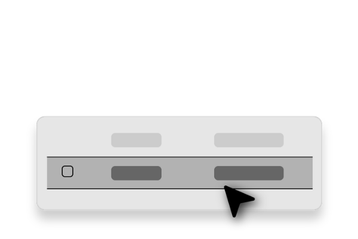

CREATE TASK
Task
Due date and Time
Add Task
Task
Due Date
Status

Select a task to view and edit details
Mark as Completed
Attachments
Save
Cancel
Delete
Are you sure you want to delete this task?
This is not reversable!
No
Yes, delete